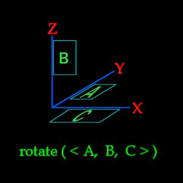

>>
(c) 2006 www.darth-arth.de
ICARUS Manual (deutsche Version)
VORAUSSETZUNGEN:
>>
Tuturial Scripting - Installation BehavEd (Scripts-Editor) (hier)
BehavEd benutzen
BehavEd ist ein drag & drop Programm zum erstellen von Scripts. Links siehst du ne Liste mit verfügbaren ICARUS Kommandos. Rechts ist eine Reihe von Knöpfen die für BehavEd Funktionen wie das Laden und Speichern der Scripts, Beenden, Kopieren und Einfügen usw. da sind.
BehavEd Kommando Knöpfe
Actions
Add – Fügt das aktuell ausgewählte Kommando zum Script hinzu (du kannst auch doppelt drauf klicken)
Delete – Löscht die ausgewählte Zeile aus dem Script (du kannst auch entfernen drücken)
Edit – Editiert die ausgewählte Zeile des Scripts (du kannst die Zeile auch doppelt anklicken)
Clone – Kopiert die selektierte Zeile in die nächste Zeile
Copy – Kopiert die selektierte Zeile in den Zwischenspeicher (es geht natürlich auch strg+c)
Paste – Fügt die Zeile(n) aus dem dem Zwischenspeicher ein (es geht auch strg+v)
File
New – Erstellt ein neues Script
Open – Öffnet ein existierendes Script
Append – Fügt ein bestehendes Script am Ende des aktuellen ein
Save – Speichert das aktuelle Script unter dem momentanen Namen
Save As… - Speichert das Script unter einem anderen Namen
Application
Preferences – Eine Liste von Verzeichnissen und Einstellungen die BehavEd nutzt (hier wird es auch eingerichtet)
About… - Einige Informationen über BehavEd
Exit – Beendet BehavEd (Aber das wolln wir im Moment ja nicht :P )
Treeview Options
Show Types – Schaltet das Anzeigen der Arten von allen Strings und Values an
%g floats – Zeigt alle Dezimalstellen an, also am Ende noch Nullen (normalerweise werden nur genutzte angezeigt)
Compile! – Kompiliert das Script, damit es im Spiel von ICARUS genutzt werden kann
Das Feedback Fenster
Alle Errors und Nachrichten werden hier angezeigt. Wenn ein Script erfolgreich kompiliert wurde steht da “OK”. Andernfalls steht da der Error.
ICARUS Kommando Liste
Du kannst ein Kommando zu deinem Script (im großen Fenster in der Mitte dargestellt) entweder durch doppelt drauf klicken oder durch Reinziehen hinzufügen. Wenn du ein Kommando nur anklickst erscheinen über dem Feedback Fenster Informationen darüber.
Key:
{} – Zeigt an das ein Kommando andere Kommandos beinhalten kann.
e – Ein normales Kommando
[] – Ein Makro, eine Gruppe von Kommandos.
Kommandos:
(Für detaillierte Beschreibung siehe unten)
flush if loop affect run wait sound move rotate use (kill) remove
print rem declare free get random set camera task do wait dowait
(walkTo runTo)
Die Kommandos editieren
Wenn du einmal ein Kommando zu deinem Script hinzugefügt hast, musst du es richtig einstellen. Dies kannst du entweder durch Doppelklicken auf das Kommando oder durch erst das Kommando an-, und dann 'edit' klicken tun.
Du wirst mit einer Reihe von Boxen und Feldern belohnt werden.
Manche sind einfache Eingabefelder wo du was eintippen musst (/kannst). Diese sind meistens dadurch gekennzeichnet, das darunter steht welcher Typ benötigt wird, string, float, vector, usw..
Andere sind Drop-Down-Menüs, in denen du aus vorgegeben Möglichkeiten eine auswählen musst. Diese Drop-Down-Menüs verändern gelegentlich Eigenschaften von Feldern, du musst nach dem ändern dann 'Re-Evaluate' anklicken, damit die anderen Felder entsprechend eingestellt werden.
Neben den Eingabefeldern ist ein “Helper” Knopf. Wenn du ihn anklickst, kannst du das “get” Kommando (siehe unten) benutzen. Nur die Felder die den richtigen Typ haben sind möglich. Wenn die benötigte Eingabe ein Float ist kannst du auch die “random” Funktion (noch mal siehe unten) benutzen. Dann trag einfach die kleinste und die größte mögliche Zahl ein. Wenn du dich entscheidest, doch keine der Helper-Funktionen zu nutzen, klick “revert” an, um zur normalen Eingabebox zurück zu kommen.
Wenn du fertig bist, klick 'ok' oder klick auf 'cancel' falls du die Änderungen nicht übernehmen willst.
"Script-Fluss" Kommandos
(flush, loop,
wait, if, affect, run)
Dies sind Kommandos, die den Ablauf des Scripts kontrollieren. In anderen Worten, sie sagen, wann und wie ein Kommando ausgeführt wird.
rem – Dieses Kommando kontrolliert nicht wirklich den Ablauf des Scripts, es ist nur ein Kommentar. Du kannst hier Notizen für dich rein schreiben, oder es für andere einfacher machen dein Script zu verstehen usw. Es ist eine gute Idee, an den Anfang des Scripts ein 'rem' zu stellen, und hinein schreiben, wozu das Script da ist.
flush – Dieses Kommando entfernt alle laufenden oder noch durchzuführende Kommandos vom Entity. Es ändert keine Einstellungen am Entity, sondern löscht nur die noch nicht ausgeführten Kommandos, wie zum Beispiel „geh zum Baum“.
Als Beispiel, du hast dieses Script einem weglaufenden Gegner zugewiesen:
set ( “SET_BEHAVIORSTATE”, “BS_DEFAULT” )
set ( “SET_LOOK_FOR_ENEMIES”, “false” )
set ( “SET_WALKING”, “true” )
set ( “SET_NAVGOAL”, “walk1” )
wait ( 3000 )
print ( “Hello!” )
Aber dann: nachdem die ersten zwei Kommandos ausgeführt wurden wird ein anderes Script auf dem Gegner ausgeführt:
flush()
set ( “SET_LOOK_FOR_ENEMIES”, “true” )
set ( “SET_WALKING”, “false” )
print( “I kill you!” )
Das “flush” Kommando entfernt alle Befehle vom Entity, die noch nicht ausgeführt wurden. Wenn also die ersten beiden Kommandos ausgeführt wurden, kommt das zweite Script, wodurch er in den Angriff übergeht und “I kill you!” ausgibt. Er wird niemals drei Sekunden warten und “Hello” sagen – diese Kommandos wurden “geflushed”.
Flushs sind nützlich um ein vorheriges Script zu stoppen, das in einer Schleife lief. Der Flush stoppt dann die Schleife.
loop – Ist ein einfaches Kommando, um Kommandos zu wiederholen. Also kannst du an Stelle von:
wait ( 3000 )
print ( “Hello World!” )
wait ( 3000 )
print ( “Hello World!” )
wait ( 3000 )
print ( “Hello World!” )
wait ( 3000 )
print ( “Hello World!” )
einfach machen:
{
wait ( 3000 )
print ( “Hello World!” )
}
Wenn du eine Schleife sich für immer wiederholen lassen willst, tipp als Nummer “-1” ein.
Loop ( -1 )
{
wait ( 3000 )
print ( “Hello World!” )
}
Das lässt das Script für immer, oder bis es geflushed wurde, weiter laufen.
Wait – Ist ein Kommando um ein Script für [so viele wie du willst] Millisekunden zu pausieren. 1000 Millisekunden sind eine Sekunde. Und 60 Sekunden sind eine Minute. Und 60 Minuten eine Stunde. Und so weiter.
Als Beispiel:
print( “Hello…” )
wait( 1000 )
print( “World!”)
Das lässt das Script “Hello…”ausgeben, dann eine Sekunde warten und dann “World!” ausgeben.
if – Dieses Kommando prüft eine Bedingung, die erfüllt sein muss, damit der Teil in den geschweiften Klammern ausgeführt wird.
Das einfache Format ist:
if ( Wert1 = Wert2 )
{
print( “Hello World!” )
}
Werte die du überprüfen kannst, sind Variablen und Werte, die du mit 'get' geholt hast.
Als Beispiel:
if ( get(FLOAT, “health”) > 0 )
{
print( “Hello World!” )
}
Mehr zum 'get' Kommando später...
Du kannst auch einen “else” Block dahinter setzen, der ausgeführt wird wenn die 'if' Bedingung nicht zutrifft.:
if ( get(FLOAT, “health”) > 0 )
{
print( “Hello
World!” )
}
else
{
print( “Hey, I’m dead!” )
}
affect – Dieses Kommando sendet eine Reihe von Befehlen an ein
anderes Entity als das, welches das Script ausführt. Zum
Beispiel:
Print( “Hello, Fred!”)
Affect ( “Fred”, FLUSH )
{
wait( 1000 )
print( “Leave me alone!” )
}
Im Beispiel oben sagt das das Script ausführende entity “Hello, Fred!” und sagt fred das er eine Sekunde warten soll und dann “Leave me alone!” sagt.
Der Name (“Fred”) den du angibst muss der script_targetname des zu 'benutzenden' Entitys sein. Für NPCs kannst du auch NPC_targetname nehmen. Bei allen anderen Entitys musst du script_targetname nehmen falls du sie irgendwann per script ansprechen willst.
Das zweite “affect” Parameter entscheidet, wie das Entity die Befehle auführt. Zur Auswahl stehen:
FLUSH – Wie das “flush” Kommando, flushed Fred und lässt ihn den “affect” Block ausführen.
INSERT – Was immer Fred gerade macht, er fügt die Kommandos ein und macht hinterher weiter damit. Wenn Fred also rum sitzt, isst und sich um sieht, wird er “Leave me alone!” sagen und hinterher weiter sitzen, essen und sich umsehen.
Es ist wichtig, daran zu denken, dass das Affect Kommando die Befehle nur an das Entity sendet, jedoch wird nicht darauf gewartet, dass das "affectete" Entity mit den Befehlen fertig ist.
Als Beispiel:
Print( “Hello, Fred!”)
Affect ( “Fred”, FLUSH )
{
wait( 1000 )
print( “Leave me alone!” )
}
print( “Damn you to Hell, Fred!” )
Dieses Script wird nicht warten, bis Fred fertig ist und dann “Damn you to Hell, Fred!” sagen. Es wird etwas wie das Passieren:
“Hello, Fred!”
“Damn you to Hell, Fred!”
Dann, eine Sekunde später sagt Fred:
“Leave me alone!”
Das passiert weil “affects” die Befehle sofort und auf ein Mal an das Entity (Fred) sendet. Wenn du willst, das gewartet wird, bis Fred gesprochen hat, musst du so was machen.
Print( “Hello, Fred!”)
Affect ( “Fred”, FLUSH )
{
wait( 1000 )
print( “Leave me alone!” )
}
wait( 2000 )
print( “Damn you to Hell, Fred!” )
Du wartest zwei Sekunden weil ja beim affect eine Sekunde ist und noch eine mehr gewartet wird.
Das ist eine wichtige Regel und leicht zu vergessen. Also merke: affects werden nicht vom das Script ausführenden Entity ausgeführt, sondern an ein anderes Gesendet!
run – dieses Kommando starten ein anderes Script vom aktuellen Script aus.
Sagen wir mal du hast so ein Script:
print( “Hello World!” )
run( “test/response” )
wait( 1000 )
print( “Oh well, I give up.” )
und ein Script namens “test/response” wie dieses:
wait( 1000 )
print( “I said Helloooo World!” )
Wenn du das erste Script laufen lässt, passiert folgendes:
“Hello World!”
(1 sek. Pause)
“I said Helloooo World!”
(noch 1 sek. Pause)
“Oh well, I give up.”
Also fügt ein “run” Kommando einfach nur da wo es steht eine Reihe von Befehlen ein. Das ist nützlich wenn du eine Reihe von Befehlen von verschiedenen Scripts benutzen willst. Wenn du diese in ein einzelnes Script schreibst kannst du sie von jedem beliebigen Script “runnen”. Das spart Zeit weil du die Befehle nicht immer wieder neu Einfügen musst. Außerdem hilft diese Art des Einfügens die Behebung von Fehlern, da du später nicht alle Scripts ändern musst.
Makros
(walkTo, runTo, usw.)
Makros sind einfache Blöcke von Befehlen, die der Einfachheit halber zusammen geschlossen sind. Dies kann ein Script übersichtlicher machen.
(task, do, wait, dowait)
Tasks sind eine Gruppe von Befehlen, auf die man das Script warten lassen kann. Dies ist in allen möglichen Situationen nützlich. Wenn du z.B. willst, dass ein NPC zu einem Schalter läuft und ihn drückt, muss das Script darauf warten, dass er da ist, ehe er denn Schalter drückt. Auch wenn ein NPC erst eine Animation oder eine Zeile in einem Dialog beenden soll, brauchst du einen task.
Das Format des tasks ist folgendes:
task ( “TASKNAME” )
{
Kommandos…
}
Den Tasknamen kannst du frei wählen, aber es sollte (darf) nicht zwei gleiche Tasknamen geben.
Um einen Task ausführen zu lassen lassen, benutzt du:
do ( “TASKNAME” )
Das startet den task mit dem namen TASKNAME.
Wenn ein Script warten soll, bis ein task fertig ist, benutzt du:
wait ( “TASKNAME” )
Das
Script wird nicht fort fahren, ehe nicht alle Kommandos des tasks ausgeführt
sind. MERKE: Wenn du “wait” ohne “do”
verwendest, wird das Script NIEMALS BEENDET! In anderen Worten: tu das nicht.
Oft will man erst ein "do” und dann ein “wait” verwenden, um ein Script den task ausführen und auf ihn warten zu lassen. In diesem Fall, um Zeit zu sparen, kannst du folgendes benutzen:
dowait ( “TASKNAME” )
Dies startet den task und pausiert den Rest des Script augenblicklich, bis der task ausgeführt ist.
Es ist wichtig, zu wissen, das es einige Kommandos gibt, die einige Zeit benötigen (z.B. zu einem navgoal zu gehen oder eine Zeile eines Dialogs beenden), während die meisten Befehle sofort ausgeführt sind (z.B. der print Befehl). In diesem Dokument sind alle Befehle die einige Zeit brauchen, mit einem Sternchen (*) gekennzeichnet. Wenn du einen task machst, muss er mindestens eins von diesen Kommandos beinhalten, oder er ist fertig, sobald du ihn gestartet hast.
Das wichtigste, was du dir merken solltest, ist: Ein task ist nur für das Entity für das er definiert ist. Das heißt, wenn du einen task auf einem Entity definiert hast, und dann von einem anderen aus, z.B. per affect, darauf zugreifen willst, bekommst du einen "cannot find task block TASKNAME” Fehler.
Als Beispiel:
task ( “Go to the door” )
{
commands…
}
affect ( “Fred”, FLUSH )
{
dowait ( “Go to the door”);
}
Ist falsch. “Fred” hat keine Ahnung, was zum Teufel denn “Go to the door” sein soll, weil der task von einem Entity definiert wurde, der "Fred" affected hat, und nicht "Fred" selber!
Die richtige Art:
affect ( “Fred”, FLUSH )
{
task ( “Go to the
door” )
{
commands…
}
dowait ( “Go to the door”);
}
Zu Anfang ist das ein normaler Fehler, aber du wirst es mit der Zeit lernen.
Als letztes ist es wichtig, das man einen task nur ein Mal definieren kann, jedoch beliebig oft ausführen.
Als Beispiel:
loop ( 50 )
{
task ( “Go to the
door” )
{
commands…
}
dowait ( “Go to the door”);
}
Ist
Falsch. Es definiert den task 50 mal! Was du willst
ist:
task ( “Go to the door” )
{
commands…
}
loop ( 50 )
{
dowait ( “Go to the door”);
}
Das definiert den task einmal, aber führt in 50 Mal aus, wie du wolltest.
sound( CHANNEL, dateiname )
Mit dem Sound Kommando spielt man einen Sound. (wer hätte das gedacht :D ) Es gibt verschiedene Kanäle auf denen du den Sound abspielen lassen kannst. Wenn du einen Sound in einem noch gebrauchten Kanal spielst, wird der vorherige Sound ausgemacht.
CHAN_AUTO ?? Sucht sich einen ungenutzten Kanal und spielt da den Sound
CHAN_LOCAL Menü Sounds usw.
CHAN_WEAPON Spielt im Waffen Kanal ab
CHAN_VOICE Lässt den NPC seinen Mund bewegen
CHAN_VOICE_ATTEN Lässt den NPC seinen Mund bewegen, benutzt den normalen Sound-Falloff (wird leiser)
CHAN_ITEM Spielt den Sound auf dem Item Kanal
CHAN_BODY Spiel auf dem Körper Kanal (Fußstapfen, Aufkomm-Sounds usw.)
CHAN_AMBIENT Für ambiente Sounds
CHAN_LOCAL_SOUND Chat Nachrichten etc
CHAN_ANNOUNCER Ansagen etc, werden global abgespielt
CHAN_LESS_ATTEN gibt den Sound wie chan_voice aus, aber benutzt die CHAN_AUTO-leeren-Kanal-such-Funktion
CHAN_MENU1 Menüsachen etc.
CHAN_VOICE_GLOBAL Lässt den NPC den Mund bewegen und ist wie Announcer global
Wenn ein Sound fertig sein soll ehe das Script weiterläuft, wird das so gemacht:
task(
“say hello” )
{
sound( CHAN_VOICE,
“sound/voice/test/helloworld.wav” )
}
print( “Hello yourself! )
Man kann auch auf Sounds auf den Kanälen CHAN_VOICE_ATTEN und CHAN_VOICE_GLOBAL warten, aber auf die andern nicht.
(move, rotate)
Das move Kommando bewegt einen Brush von einer festgelegten Position in einer Anzahl Millisekunden zu einer anderen, etwa so:
move (<0 0 0>, <0 0 1000>, 1000 )
Der Brush bewegt sich vom Zentrum (bei <0 0 0>) aus 1000 map units höher als das Zentrum.
Du kannst auch das get-, und das tag-Kommando benutzen um die Koordinaten zu bestimmen, also so:
move ( tag(“spot1”, ORIGIN), tag(“spot2”,
ORIGIN), 1000 )
move ( get(VECTOR, “parm1”), get(VECTOR,
“parm2”), 1000 )
Mehr zum tag und get Kommando später…
Man kann auch den mittleren Wert auslassen, dann wird der Brush zu diesem Punkt bewegt.
Das rotate Kommando dreht den brush um einen festgelegten Winkel in eine Zeit in Millisekunden:
rotate( <0 90 0>, 1000 )
dreht den brush um 90° um die Z-Achse.

Quelle: www.map-review.com
Merke: die Zeitangabe 0 dreht den brush augenblicklich.
Mit
dem Use Kommando kann man Entities in der Map benutzen.
Use(
“Targetname“ );
Targetname
ist der targetname eines (oder mehrerer) Entitys im Radiant.
Mit remove werden Entities gelöscht.
Remove( “targetname“ );
targetname ist dabei der Name des Entitys. Heißt z.B. ein NPC Fred, hat also
NPC_targetname Fred, so wäre das script um ihn zu löschne
Remove( “Fred“ );
Mit print gibt man einen Text aus.
CAMERA Kommandos
(enable, disable, move, pan, zoom, roll,
follow, track, distance, fade, shake, path)
Die camera Kommandos werden für Cutscenes genutzt: gescriptete Ereignisse, in denen die Kameraperspektive sich ändert und es schwarze Balken gibt.
Enable – Dies aktiviert den Kamera Modus. Die Sicht des Spiele wird zu der der Kamera.
Disable - Dies deaktiviert den Kamera Modus und der Spieler kehrt in die normale Sicht zurück.
Move – Das wird benutzt um die Kamera zu einem bestimmten Punkt oder bestimmten Koordinaten zu bewegen. Hierzu gibt es drei Möglichkeiten:
camera( MOVE, <0 0 0>, 0 )
Bewegt die Kamera zu den Koordinaten <0 0 0>, dem Mittelpunkt der Map
camera( MOVE, tag( “cameraSpot1”, ORIGIN
), 0 )
bewegt die Kamera zu dem ref_tag in der Map, der “cameraSpot1” heißt.
camera( MOVE, get( VECTOR, “SET_ORIGIN” ),
0 )
Bewegt die Kamera an die Position des aktuellen Entitys (oder was immer für'n Vector im set Feld geholt wird bzw. welche Variable du "gettest").
Der letzte Parameter gibt an, wie lange die Kamera (in Millisekunden) für die Bewegung braucht. Wenn du Null eingibst, springt die Kamera sofort zum Ausgangspunkt. Wenn du 1000 eingibst, wird die Kamera sich so schnell bewegen, dass sie exakt 1000 Millisekunden (eine Sekunde) braucht, um am Ziel anzukommen.
Pan – Damit drehst du die Kamera. Du kannst sie nach links, rechts, oben oder unten gucken lassen, und wenn du willst kannst du sie sich um die eigene Achse drehen lassen (also schief stellen).
Camera ( PAN, Drehung, Schwenk, Dauer )
Das Format ist:
Camera(
PAN, <0 0 0>, <0 0 0>, 0 )
Die
benutzten Werte sind: <pitch yaw roll>
Da
ich den Originaltext hier nicht so recht verstanden hab, beschreib ich mal das,
was ich tu.
Im
1. Feld werden
die gewünschten Endwerte eingegeben, da ich das mit dem Schwenken a) nicht
brauche und es b) nicht verstanden habe lass ich das 2. immer auf <0 0 0>,
im 3. steht die Dauer.
(Originaltext: The destinationAngle is the
final angle you intend to finish at. The panDirection is the direction
you wish each axis to move in. Any value is valid, but it will only look
to see if each axis’ direction is positive or negative. A value of zero
will make the camera find the shortest direction to pan in to reach the
destinationAngle.)
Und, wie beim Move Kommando, kann man die Werte auf drei Arten einstellen
camera( PAN, <0 0 0>, <1 1 1>,
0 )
camera( PAN, tag( “cameraSpot1”, ORIGIN ),
<1 1 1>, 0 )
oder
camera( PAN, get( VECTOR, “SET_ORIGIN” ),
<1 1 1>, 0 )
Eine Dauer von Null dreht die Kamera augenblicklich, bei mehr als Null wird sie geschwenkt.
Zoom – Verändert die Linsengröße, hat den Effekt eines Zooms.
Camera( ZOOM, 80, 0 )
Der zweite Wert 80 ist die Linsengröße die benutzt werden soll. 80 ist die normale Linsengröße, 1 ist der maximale Zoom und 120 der größte mögliche Wert. Der letzte Wert ist die Dauer, bei Null wird augenblicklich der neue Zoom angenommen, ansonsten dauert es [X] Millisekunden.
Roll – Hiermit kann man die Kamera kippen.
Camera( ROLL, 45, 0 )
Ein positiver Wert dreht die Kamera nach rechts, ein negativer nach links. Der letzte Wert ist die Dauer.
Follow – Lässt die Kamera einer Gruppe Entities folgen.
camera( FOLLOW, “cameraGroup”, speed,
initialLerp )
Das “cameraGroup” ist eine Zeichenkette (String). Jedes Entity, dass dieser “cameraGroup” angehört, wird Teil der “Szene”. Die Kamera sucht sich automatisch die Mitte der “Schauspieler”. Das ist nicht nur nützlich, um die Kamera NPCs folgen zu lassen, sondern auch, um eine die Kamera richtig einzustellen, um alle NPCs ins Bild zu kriegen. Um die “cameraGroup” von einem Entity einzustellen, benutze das SET_CAMERA_GROUP Kommando (mehr zum Set-Kommando steht in der Set-Sektion).
Der
zweite Wert ist die Drehgeschwindigkeit der Kamera. Je höher diese ist,
desto schneller reagiert die Kamera. Der Wert 0 entspricht dem Standardwert
(100).
“initialLerp” ist ein wahr/falsch (0/1) Kommando, mit dem man einstellt, ob die Kamera erst langsam (bzw. schnell, je nach “speed”) in Richtung der “cameraGroup” schwenkt oder Augenblicklich die Richtung ändert.
Track – Lässt die Kamera einem Pfad folgen
Camera( TRACK, “trackName”, speed,
initialLerp )
Der “trackName” ist der targetname des ersten path_corners aus einer Reihe selbiger. Die funktionieren wie bei einer func_train.
Der “speed” Wert stellt ein, wie schnell sich die Kamera bewegt.
Wenn
“InitialLerp” gleich 1 ist, bewegt sich die Kamera erst von ihrer
aktuellen Position zum ersten path_corner mit der in “speed“ eingestellten
Geschwindigkeit, wenn es gleich 0 ist kommt sie sofort da hin.
Wenn die Kamera einen path_corner erreicht, sieht sie nach, ob beim nächsten ein speed eingestellt ist, und benutzt ggf. diesen. Damit kann man die Kamera in verschiedenen geschwindigkeiten fahren lassen.
Distance – Stellt die Mindestentfernung der Kamera zur “cameraGroup” ein.
Camera(
DISTANCE, distance, initialLerp )
Dieses
Kommando funktioniert mit dem “FOLLOW”Kommando, und moistens auch mit “TRACK”.
Die eingestellte “distance” bremst die Kamera ab, so dass eine
Mindestentfernung zur “cameraGroup” erhalten wird. Wenn die Kamera gerade einem
“TRACK“ folgt, wird der “speed“ angeglichen, so dass die Kamera weit genug von
der “cameraGroup“ entfernt ist.
Mit “initialLerp” kann man die Kamera schneller werden lassen, damit sie auf die gewünschte “distance“ kommt, statt einer sofortigen Positionsänderung.
Fade – Lässt die Kamera ihre RGB (Rot Grün Blau) Farbe und Transparenz ändern.
Camera( FADE, startRGB, startOpacity,
endRGB, endOpacity, duration )
Um
einen Fade-to-Black (bildschirm wird Schwarz) über 2 sekunden zu machen,
benutzt man das:
Camera(
FADE, <0 0 0>, 0, <0 0 0>, 1, 2000 )
Man kann das Schwarz auch wieder ausblenden, und zu Weiß oder irgendeiner anderen Farbe wechseln.
Shake – Rüttelt die Kamera für eine angegebene Zeit.
Camera(
SHAKE, intensity, duration )
Die “intensity” (Intensität) wird in Zahlen von 1 bis 16 angegeben.
Die “duration” (Dauer) wird in Millisekunden angegeben. (1 sek = 1000 milisek)
Stellt einen ROF Pfad ein, dem die Kamera folgt. Dies ist ein Kommando, auf dessen Vollendung gewartet werden kann (task+dowait).
Get( FLOAT/VECTOR/STRING, “” )
Alles was
man “setten” kann, kann man auch “getten”. Get wird benutzt, um einen Wert aus
einem Set-Feld in ein anderes zu kopieren, oder für IF-Abfragen.
set(“SET_PARM1”, “Fred”)
if( get(STRING, “SET_PARM1”) = “Fred” )
{
print(“Hello World!”)
}
In BehavEd kann man “Get” benutzen, wenn man auf den “helper” button im Kommando Editieren Dialog klickt.
(global/local)
Alle Variablen müssen deklariert (eingerichtet) warden, ehe man sie benutzen kann. Dabei muss der Typ und der Name der Variable eingestellt werden.
declare( FLOAT, “zaehler” )
declare( VECTOR, “position” )
declare( STRING, “meinName” )
Und so werden Variablen eingestellt:
set( “meinName”, “Fred” )
Jetzt kann man Variablen jedenzeit “getten”, z.B. in IF-Abfragen:
If ( get(STRING, “meinName”) = “Fred” )
{
print( “Hello, World!” )
}
Wenn man eine Variable nicht mehr braucht, kann man sie “löschen”:
free(
“meinName” )
Alle
Variablen werden gelöscht, wenn das Level zu Ende ist, aber vielleicht willst
du sie ja selber während das Level läuft löschen, weil maximal 32 Variablen pro
Typ pro Level erlaubt sind
Natürlich kann man Variablen auch bei Set benutzen:
set( “SET_NAVGOAL”, get(STRING,
“globalNavGoal”) )
So
kann man in einem Script einen globalen “Navgoal” (Punkt, zu dem ein NPC laufen
soll) einstellen, und diesen immer benutzen. Das Einstell-Script sähe dann so
aus:
set(
“globalNavGoal”, “FredsHome” )
Oder, wenn das Script vielseitiger sein soll:
set( “globalNavGoal”, get(STRING,
“SET_PARM1”) )
So kann man 50 Entities das Script immer anders ausführen lassen, je nachdem, was ihr parm1 ist.
Random(
minNumber, maxNumber )
Mit dieser Variablen-Funktion kann man ein wenig Zufall in seine Scripts kriegen. Gib das einfach dort ein, wo eigentlich ne Nummer stehen sollte, und es wird eine zufällige ermittelt.
random( 0, 3.5 )
Hier wird dann eine zufällige Nummer zwischen 0 und 3,5 benutzt.
Man kann Random nur über den “helper” Button erreichen.
TAG( “targetname”, ORIGIN/ANGLE )
Im Radiant kann man entities namens Ref_tag platzieren. Bei denen wird dann ein
targetname, und durch a) angles oder b) einen info_notnull/target_position die
Richtung eingestellt. Diese ref_tags kann man dann in Scripts benutzen, um
Koordinaten einzustellen, ohne umständlich die Koordinaten einzustellen. (Außerdem
wird das script dadurch flexibler)
Beispiel:
camera( MOVE, tag(“cameraSpot1”, ORIGIN), 0 )
Hiermit wird die Kamera zum ref_tag mit dem targetname “cameraSpot1” bewegt.
Man kann auch die Richtung der Kamera via ref_tag einstellen:
camera( PAN, tag(“cameraSpot1”, ANGLES),
<1 1 1>, 0 )
In BehavEd kann man tag unter “helper” auswählen.
set( SET_TABLE, value )
Das “set”
Kommando ist sicherlich das nützlichste einzelne Kommando. Man kann damit
eigentlich “nur” den Wert von einer beliebigen Variable aus der Set Liste (in
BehavEd ein Dropdown Menü) setzen. Allerdings ist der dadurch erreichte Effekt
(teilweise) ziemlich groß, was dieses Kommando sehr mächtig macht.
Beispiel:
set(
“SET_BEHAVIORSTATE”, “BS_WANDER” )
Dieses
Kommando sagt einem NPC, dass er zufällig durch das Waypoint-Netz des Levels
wandern soll. (Vorrausgesetzt es gibt Waypoints ;) )
In der nächsten Sektion steht die Liste sämtlicher SET Variablen mitsamt Erklärung.
Kurz noch was zu den SET_PARM Variablen:
Es
gibt 16 davon – SET_PARM1 bis SET_PARM16. Es sind Strings, Nummern oder
Vektoren, die man im Radiant bei den Entities (in den Einstellungen, via Key:
Parm1 Value: meinWert) einstellt. Damit kann man das Script flexibler machen.
Ein
einfaches Beispiel:
In deiner Map gibts einen NPC, der zwischen 3 waypoints hin und her laufen soll, die “nav1”, “nav2” und “nav3” heißen. Normalerweise würdest du jetzt so ein Script schreiben:
set(
“SET_BEHAVIORSTATE”, “BS_DEFAULT” )
set( “SET_WALKING”, “true” )
Loop( -1 )
{
task( “walk to
nav1” )
{
set( “SET_NAVGOAL”, “nav1” )
}
task( “walk to
nav2” )
{
set( “SET_NAVGOAL”, “nav2” )
}
task( “walk to
nav3” )
{
set( “SET_NAVGOAL”, “nav3” )
}
}
So, und nun läuft dein NPC für immer diese 3 Navgoals ab.
Aber jetzt setzt du einen andern NPC in die map, der 3 ganz andere Navgoals, nämlich “point1”, “point2” und “point3” ablaufen soll, ablaufen soll, in die Map. Tja, jetzt musst du noch ein Script schreiben. “Was?!?”, denkst du jetzt bestimmt, “das muss doch einfacher gehn!” Recht hast du. Denn jetzt kommen die parms.
Beim ersten NPC, der die 3 “nav” Navgoals ablaufen soll, stellst du jetzt ein:
parm1
nav1
parm2
nav2
parm3
nav3
Und beim zweiten, der die 3 “point”s nehmen soll:
parm1
point1
parm2
point 2
parm3
point 3
Und dann kriegen beide NPCs das selbe script, dieses:
set( “SET_BEHAVIORSTATE”, “BS_DEFAULT” )
set( “SET_WALKING”, “true” )
Loop( -1 )
{
task( “walk to
nav1” )
{
set( “SET_NAVGOAL”, get( STRING, “SET_PARM1” ) )
}
task( “walk to
nav2” )
{
set( “SET_NAVGOAL”, get( STRING, “SET_PARM2” ) )
}
task( “walk to
nav3” )
{
set( “SET_NAVGOAL”, get( STRING, “SET_PARM3” ) )
}
}
Hier werden dann ,von den get Kommandos, parm1, parm2 und parm3 als Navgoals genommen.
So
kann du das selbe Script immer und immer wieder benutzen. Vielleicht sieht das
auf den ersten Blick nach mehr Arbeit aus, vor allem wenn du nur 2 NPCs hast,
aber wenn du dann anfängst, an die 50 NPCs zu haben, wirst du schnell merken,
dass auf diese Weise doch einfacher gewesen wäre.
Eine Sache solltest du beachten: Wenn du dieses Script änderst, werden alle NPCs davon betroffen sein. Aber falls du genau das willst (oder musst), dann brauchst du nur ein Script ändern, und nicht 50
SET Kommando Variablen(Set Liste):
Hier ist eine Liste von allen Set Variablen im Spiel. Jede hat im Spiel eine spezielle Funktion.
Wenn du NPCs einstellen willst, sind die Behavior Sets und Behavior States von großer Bedeutung:
Behavior Sets (spawnscript, usescript, awakescript, etc.) – Das ist ein Script, dass der NPC ausführt, wenn eine bstimmte Situation eintrifft. (Beschreibung im Einzelnen s.u.)
Behavior States – Hier wird das Verhalten des NPC eingestellt – welche KI benutzt werden soll. Siehe die Behavior State Liste weiter unten.
Noch mal zur Erinnerung:
Alles mit einem vorangehenden Sternchen (*) wird das Script pausieren, bis es
fertig ausgeführt ist.
Mit Targetname ist bei
NPCs meistens NPC_targetname gemeint.
Alle eingegrauten Kommandos/Listeneinträge sind nicht eingebaut und funktionieren folglich nicht.
SET_ANGERSCRIPT Script Pfad Wird
ausgeführt, wenn der NPC zum ersten Mal einen Feind sichtet.
SET_ATTACKSCRIPT Script Pfad Wird ausgeführt, wenn der NPC zum ersten angreift.
SET_AWAKESCRIPT Script Pfad Wird ausgeführt, wenn der NPC von einem Script geweckt wird.
SET_BLOCKEDSCRIPT Script Pfad Wird ausgeführt, wenn dem NPC etwas im Weg ist und er sich nicht bewegen kenn.
SET_DEATHSCRIPT Script Pfad Wird ausgeführt, wenn der NPC stirbt. Falls SET_UNDYING "true" ist, wird es ausgeführt, wenn der NPC einen oder weniger Lebenspunkte hat.
SET_DELAYEDSCRIPT Script Pfad Wird ausgeführt, wenn eine bestimmte Zeit verstrichen ist (siehe “SET_DELAYSCRIPTTIME”)
SET_FFIRESCRIPT Script Pfad Wird ausgeführt, wenn der Spieler wiederholt das eigene Team beschießt
SET_FFDEATHSCRIPT Script Pfad Wird ausgeführt, wenn der Spieler einen Verbündeten ausschaltet
SET_FLEESCRIPT Script Pfad Wird ausgeführt, wenn der NPC als Folge von Angriffen weniger als
1/3 von seiner anfänglichen Lebensenergie hat.
SET_LOSTENEMYSCRIPT Script Pfad Wird ausgeführt, wenn der NPC nicht zu seinem Ziel kommt und aufgibt.
SET_MINDTRICKSCRIPT Script Pfad Wird ausgeführt, wenn der Spieler Geistestrick auf diesen NPC benutzt.
SET_PAINSCRIPT Script Pfad Wird ausgeführt, wenn der NPC getroffen wird, solange “ignorepain” nicht eingestellt ist.
SET_SPAWNSCRIPT Script Pfad Wird ausgeführt, sobald der NPC gespawnt wird.
SET_STUCKSCRIPT Script Pfad Wird ausgeführt, wenn das Entity “durch die Welt” (Level, a.d.Ü.) geblockt ist und nicht mehr weg kommt.
SET_USESCRIPT Script Pfad Wird
ausgeführt, wenn der NPC benutzt wird. Dafür
a) beim NPC player_use aktiviert oder
b) ein NPC_targetname eingestellt sein. Wenn
dann
dieser target gefeuert wird, wird beim NPC das use-
script ausgeführt.
SET_VICTORYSCRIPT Script Pfad Wird ausgeführt, wenn der NPC einen Gegner umbringt.
Wichtig: Der Script-Pfad wird ohne C:\Programme\LucasArts\Star Wars Jedi Knight: Jedi Academy\GameData\Base\scripts und Dateierweiterung angegeben. Wenn also dein Script an diesem Pfad liegt:
“C:\Programme\LucasArts\Star Wars Jedi Knight: Jedi Academy\GameData\Base\scripts\test\getmad.txt”
Wird als Pfad nur
folgendes angegeben:
“test\getmad”
Wenn du beim Script Pfad einfach “NULL” eingibst,
wird garnix ausgeführt. Es wäre also nicht intelligent, ein Script “NULL” zu
nennen.
Übrigens musst du
genau das tun, wenn das Entity dieses Script nur einmal ausführen soll.
Beispiel:
Wenn
ein NPC anfangs einfach nur doof in der Gegend rumstehen soll, bis er getroffen
wird, macht man das so:
Set ( “SET_BEHAVIORSTATE”, “BS_DEFAULT” );
Set ( “SET_IGNOREALERTS”, “true” );
Set ( “SET_LOOK_FOR_ENEMIES”, “false” );
Set ( “SET_PAINSCRIPT”, “test\getmad” );
Das “test/getmad” Script sieht in diesem Fall so aus:
Set ( “SET_IGNOREALERTS”, “false” );
Set ( “SET_LOOK_FOR_ENEMIES”, “true” );
Set ( “SET_PAINSCRIPT”, “NULL” );
Behavior Set – zugehörige Variablen:
SET_DELAYSCRIPTTIME int Die Zeit in Sekunden bis das “delayedscript” ausgeführt wird
SET_ORIGIN ”x y z” Stellt den Mittelpunkt (origin) des Entitys ein (in
Radiant Koordinaten)
SET_COPYORIGIN targetname Stellt den Mittelpunkt des hier angegeben Entitys beim Entity ein.
SET_TELEPORT_DEST* “x y z” Set origin here as soon
as the area is clear
SET_ANGLES ”pitch yaw roll” Sets angles of current entity
SET_DPITCH* int Wohin der NPC gucken soll. Bei einem positiven Wert guckt er nach unten,
bei einem negativen nach
oben, geradeaus = 0.
SET_DYAW* int Drehung des Entities, von 0 – 360 die selben Werte wie im Radiant (angles)
SET_LOCKYAW “off/auto/float” Hiermit kann man die Beine auf eine bestimmte Drehung
einstellen.
Der Kopf und der Körper werden weiterhin (soweit
wie möglich)
gedreht. “Off” stellt das komplett aus, “Auto”
benutzt den Standard-
wert, eine float Zahl stellt die maximale mögliche
Drehung ein.
SET_XVELOCITY float Fügt
die angegebene Geschwindigkeit auf der X-Achse hinzu. . Ein positiver Wert
bedeutet eine Bewegung nach Osten, ein negativer
nach Westen. Der Wert gibt
die “Units pro Sekunde“ an.
SET_YVELOCITY float Fügt
die angegebene Geschwindigkeit auf der Y-Achse hinzu. Ein positiver Wert
bedeutet eine Bewegung nach Norden, ein
negativer nach Süden. Der Wert gibt
die “Units pro Sekunde“ an.
SET_ZVELOCITY float Fügt
die angegebene Geschwindigkeit auf der Z-Achse hinzu. Ein positiver Wert
bedeutet eine Bewegung nach Unten, ein negativer
nach Oben. Der Wert gibt
die “Units pro Sekunde“ an
SET_Z_OFFSET float Vertikale
entfernung vom Start-Mittelpunkt… Höhe geteilt durch die Geschwindigkeit
Des Entitys mal 1000ms ist die Dauer der Bewegung.
SET_RUNSPEED int Wie schnell sich das Entity bewegt wenn es rennt
SET_WALKSPEED int Wie schnell es läuft
SET_YAWSPEED int Um wie viel Grad pro sekunde das Entity sich maximal drehne kann
SET_FORWARDMOVE int Aktuelle
vorwärts-Geschwindigkeit, wird in zahlen von -127 bis 127 angegeben.
Der Wert ist relativ, 127 heißt “benutze den runSpeed“, 64 entspricht dem “ walkSpeed“,
0 heißt, dass keine Bewegung erzwungen wird, und
ein negativer Wert bedeutet rückwärts
bewegen.
SET_RIGHTMOVE int Aktuelle
seitwärts-Geschwindigkeit, wird in zahlen von -127 bis 127 angegeben. Wenn der
Wert
positiv ist, bewegt sich das Entity nach rechts, bei einem negativen nach
links. Der
Wert ist relativ, 127 heißt “benutze den runSpeed“, 64 entspricht dem “ walkSpeed“, 0 heißt,
dass keine Bewegung erzwungen wird.
SET_NOAVOID ”true/false” Das Entity wird nicht versuchen, dem Level oder anderen Entitys auszuweichen.
Merke, das goals normalerweise waypoint_navgoals sind, aber auch
Entitys sein können.
SET_CAPTUREGOAL targetname Entity zu dem das Entity hinlaufen soll, wenn es im BS_ADVANCEFIGHT Status ist.
SET_ENEMY targetname Stellt den Gegner via targetname ein.
SET_LOCKEDENEMY ”true/false” Entity wird nicht aufhören, das aktuelle Ziel zu attackieren, bis dieses tot ist.
SET_PAINTARGET targetname Wenn dieses Entity getroffen wird, benutzt es alles mit diesem targetname.
SET_TARGET targetname Ändert den target des Entitys.
SET_TARGET2 targetname Ändert den target2 des Entitys.
SET_TARGETNAME targetname Ändert
den targetname des Entitys.
SET_VIEWTARGET* targetname Setzt
desiredYaw und desiredPitch Für dieses Entity so,
dass das Entity mit dem angegebenen targetname
angeguckt wird.
SET_NAVGOAL* targetname Stellt das navGoal des Entitys ein. Da
läuft es dann hin.
SET_AFFIRMNEGTARG ”self/name” Stellt
das Entity ein, dass positive/negative Antworten vom
Spieler bekommt, “self” ist das aktuelle Entity, alternativ
kann man den targetname eines anderen Entitys angeben.
SET_ENEMYTEAM Team Liste Welches Team das gegnerische ist.
SET_PLAYERTEAM Team Liste Welches das verbündete Team ist.
SET_REMOVE_TARGET targetname Wird
benutzt, wenn das Entity den BS_REMOVE behaviorState vollendet
hat.
SET_LOCATION* trigger msg In welchem trigger_location das Entity ist – kann man nur “getten” und nicht “setten”.
SET_ANIM_UPPER* Animations Liste Animimation für die obere Hälfte des Models einstellen
SET_ANIM_LOWER* Animations Liste Animimation für die untere Hälfte des Models einstellen
SET_ANIM_BOTH* Animations Liste Animimation für beide Hälften des Models einstellen
SET_ANIM_HOLDTIME_LOWER* int Zeit in
Millisekunden, die die untere Animation laufen soll, -1 = für immer
SET_ANIM_HOLDTIME_UPPER* int Zeit
in Millisekunden, die die obere Animation laufen soll, -1 = für immer
SET_ANIM_HOLDTIME_BOTH*
int
Zeit in Millisekunden, die die Animation laufen soll, -1 = für immer
SET_FACEAUX float stellt
den Gesichtsausdruck für die angegeben Zeit in Sekungen auf AUX (???)
SET_FACEBLINK float stellt
den Gesichtsausdruck für die angegeben Zeit in Sekungen auf Blinzeln
SET_FACEBLINKFROWN float
den Gesichtsausdruck für die angegeben Zeit in Sekungen auf bösartiges Blinzeln
SET_FACEFROWN float stellt
den Gesichtsausdruck für die angegeben Zeit in Sekungen auf Bösartig
SET_FACENORMAL float stellt
den Gesichtsausdruck für die angegeben Zeit in Sekungen auf Normal
SET_FACEEYESCLOSED float macht
die Augen für die eingestellte Zeit auf
SET_FACEEYESOPENED float macht die Augen für die eingestellte Zeit zu
SET_ADDRHANDBOLT_MODEL string .glm
model das am r_hand tag/bolt (des Models Skeletts) des NPCs sein soll
SET_REMOVERHANDBOLT_MODEL string .glm das
nicht mehr am r_hand tag/bolt sein soll
SET_ADDLHANDBOLT_MODEL string .glm
model am l_hand tag/bolt (des Models Skeletts) des NPCs sein soll
SET_REMOVELHANDBOLT_MODEL string .glm das
nicht mehr am l_hand tag/bolt sein soll
SET_SCALE float Skaliert das Model (Größe)
SET_BEHAVIORSTATE bState Liste Stellt das Verhalten des NPCs ein, siehe
SET_DEFAULTBSTATE bState Liste Stellt das Verhalten ein, das benutzt werden
soll, wenn der behavior state irgendwie gelöscht wird
SET_TEMPBEHAVIOR bState Liste Stellt ein vorrübergehend zu benutzendes Verhalten ein,
danach benutzt er wieder seinen DefaulBState
SET_AGGRESSION int Wie
gern der NPC schießt, von 1 (min) bis 5 (max),
ist genauso zu benutzen wie in NPCs.cfg
SET_AIM int Wie gut der NPC zielt, von 1 bis 5
SET_VIGILANCE float Wie
stark der NPC aufpasst, von 1 bis 5
SET_IGNOREPAIN ”true/false” Entity reagiert nicht auf Schaden
SET_IGNOREENEMIES “true/false” Entity
reagiert nicht auf Gegner
SET_IGNOREALERTS “true/false” Der NPC reagiert nicht darauf, wenn Verbündete
Gegner erspähen, sie
müssen diese erst selbst sehen
SET_DONTSHOOT ”true/false” Keiner wird dieses Entity angreifen
SET_DONTFIRE ”true/false” Das Entity wird seine Waffe nicht benutzen
SET_NOTARGET ”true/false” Keiner wird dieses Entity bemerken
SET_SHIELDS “true/false” NICHT EINGEBAUT
SET_ALT_FIRE
”true/false” Dieser NPC
benutzt den alternativen Feuermodus
SET_NO_RESPONSE ”true/false” Dieser
NPC wird nicht antworten
SET_NO_COMBAT_TALK ”true/false” Dieser
NPC wird zum Kampf nix sagen, z.B. brüllen
Sith nicht “Stell dich mir!“ (A.d.Ü.)
SET_NO_ALERT_TALK ”true/false” Dieser
NPC wird keine Alarm Sounds nutzen
SET_SHOT_SPACING int Millisekunden
zwischen den einzelnen Schüssen, wird
zurückgesetzt
wenn die Waffe gewechselt wird
SET_FOLLOWDIST float Wie
weit der NPC vom leader im BS_FOLLOW_LEADER
bState entfernt laufen soll
SET_NO_GROUPS ”true/false” Dieser NPC kann keine Gruppen alarmieren oder Teil einer
Gruppe sein
SET_FIRE_WEAPON ”true/false” Dieser
NPC wird denn Abzug gedrückt halten, bis das auf false gesetzt wird
SET_NO_MINDTRICK ”true/false” Dieser
NPC ist Geistestrick-Immun
SET_USE_CP_NEAREST ”true/false” Dieser
NPC wird versuchen den nächsten combat point (point_combat), und nicht
den, der dem Spieler am nächsten ist benutzen oder versuchen
ihm in die Flanke zu
fallen.
(gut bei
NPCs die keinen Weg zum Player haben, z.B. wenn die auf der andern
Seite eines Abgrunds sind)
SET_NO_ACROBATICS ”true/false” Jedi/Sith machen keine Akrobatik, wie Rollen oder Wagenräder
SET_CROUCHED ”true/false” Läuft gebückt
SET_LEAN ”left/right/none” NICHT EINGEBAUT
SET_RUNNING ”true/false” Stellt ein, dass der NPC mit seinem runSpeed.läuft
SET_WALKING ”true/false” Stellt ein, dass der NPC mit seinem walkSpeed. geht
SET_CHASE_ENEMIES ”true/false” Der NPC wird Gegner verfolgen
SET_LOOK_FOR_ENEMIES ”true/false” Der
NPC wird nach Gegnern ausschau halten
SET_FACE_MOVE_DIR ”true/false” NICHT EINGEBAUT
SET_DONT_FLEE ”true/false” Der NPC wird nicht flüchten
SET_FORCED_MARCH ”true/false” Der NPC läuft nur, wenn man auf ihn guckt (wie der
Offizier
in JK2 Artus Mine)
SET_LOOK_TARGET ”targetname” Der
NPC bewegt seinen Kopf in Richtung dieses Entitys.
SET_SHOOTDIST float Maximale
Entity, aus der das Entity auf Ziele schießt
SET_VISRANGE float Maximale
Entfernung, in der das Entity Gegner entdeckt
SET_HFOV int Stellt den horizontalen Sichtradius ein
SET_VFOV int Stellt
den vertikalen Sichtradius ein.
SET_EARSHOT float Maximale
Entfernung, auf die der NPC Geräusche hört
SET_ICARUS_FREEZE targetname Gibt ein Entity an, das eingefroren
werden soll.
!!!WICHTIG!!!: sobald ein
Entity eingefroren ist,
kann es sich nicht selber wieder entfrieren!
SET_ICARUS_UNFREEZE targetname Gibt
ein Entity an, das “aufgetaut“ werden soll.
!!!WICHTIG!!!: sobald ein
Entity eingefroren ist,
kann es sich nicht selber wieder entfrieren!
Allgemeine Set Felder:
Nur-Spieler
SET_TREASONED “true/false” Alle auf dem Spieler laufenden Scripts stoppen, seine
Verbündeten
beginnen ihn anzugreifen und Levelwechsel
funktionieren nicht mehr.
SET_PLAYER_LOCKED “true/false” Der
Spieler kann sich nicht bewegen und nicht schießen
SET_LOCK_PLAYER_WEAPONS “true/false” Der
Spieler kann die Waffe nicht wechseln
SET_VIEWENTITY targetname Der
Spieler sieht durch die Augen dieses NPCs und
steuert ihn auch, wie z.B. der
Droid_mouse im JK2-Kejim
Spieler & NPCs
SET_INVISIBLE “true/false” Macht einen NPC unsichtbar und durchlässig
SET_INVINCIBLE “true/false” Komplett unsterblich
SET_FORCE_INVINCIBLE “true/false” Macht-Immunität
und Unsterblichkeit
SET_SABER1BLADEON int Stellt
Klinge X+1 vom Lichtschwert in der rechten Hand an.
(wenn der Wert 0 ist, wird Klinge 1 angemacht, bei 1 2 usw.)
SET_SABER2BLADEON int Stellt
Klinge X+1 vom Lichtschwert in der linken Hand an.
(wenn der Wert 0 ist, wird Klinge 1 angemacht, bei 1 2 usw.)
SET_SABER1BLADEOFF int Stellt Klinge X+1 vom Lichtschwert in der rechten Hand aus.
SET_SABER2BLADEOFF int Stellt Klinge X+1 vom Lichtschwert in der linken Hand aus.
SET_NO_KNOCKBACK “true/false” Das
Entity wird nicht von Explosionen o.Ä. weg gedrückt.
SET_HEALTH int Stellt
die Lebensenergie des aktuellen Entitys ein.
SET_FRICTION int Stellt
die Reibung des aktuellen Entitys ein, von 0 (min) bis 6 (max)
SET_GRAVITY float Stellt
die Gravitation für dieses Entity ein. Standard ist 800.
SET_WEAPON Weapon Table Stellt die Waffe des Entitys ein. Wenn “drop”
eingestellt wird, schmeißt das
Entity die
aktuelle Waffe weg. In JK2 wird das normal-
Verhalten eines NPCs (BS_DEFAULT) durch
seine Waffe kontrolliert, ein
Rodianer mit Licht-
schwert spielt Sith.
SET_UNDYING “true/false” Das Entity kriegt Schaden, bis es nur noch einen
Lebenspunkt hat, aber wird niemals sterben.
SET_SOLID* ”true/false” Macht das Entity Fest(true) oder
Durchlässig(false).
Mit dem solide (fest) werden wartet es, bis
niemand in
ihm steckt.
SET_WIDTH int Breite/Länge des NPCs
SET_VAMPIRE “true/false” Ist nur in Spiegeln sichtbar
SET_NO_IMPACT_DAMAGE “true/false” Dieses
Entity kriegt keinen Schaden mehr durch Fälle
SET_MORELIGHT “true/false” Der NPC/Player hat immer mindestens
96 “Lichthelle”
SET_DISMEMBERABLE “true/false” Der NPC/Player fällt nicht auseinander, wenn
man ihn mit
dem
Lichtschwert tot haut. (standard: true)
SET_NO_FORCE “true/false” Der
NPC/Player ist Macht-Immung
SET_NO_FALLTODEATH “true/false” Der NPC/Player schreit und wedelt nicht mit den
Armen
wenn er weit fällt.
SET_ITEM Item Liste gibt ein Item
SET_FORCE_HEAL_LEVEL Macht Stufe Ändert
die Macht Heilung Stufe
SET_FORCE_SPEED_LEVEL Macht Stufe Ändert
die Macht Geschwindigkeit Stufe
SET_FORCE_PUSH_LEVEL Macht Stufe Ändert
die Macht Schub Stufe
SET_FORCE_PULL_LEVEL Macht Stufe Ändert die Macht Griff Stufe
SET_FORCE_MINDTRICK_LEVEL Macht Stufe Ändert
die Macht Geistestrick Stufe (NPCs benutzen das nicht)
SET_FORCE_GRIP_LEVEL Macht Stufe Ändert
die Macht Würgegriff Stufe
SET_FORCE_LIGHTNING_LEVEL Macht Stufe Ändert
die Macht Blitz Stufe
SET_SABER_THROW Macht Stufe Ändert
die Lichtschwertwurf Stufe
SET_SABER_DEFENSE Macht Stufe Ändert
die Lichtschwerabwehr Stufe
SET_SABER_OFFENSE Macht Stufe Ändert
die Lichtschwertangriff Stufe
Alle Entities
SET_COUNT int Ändert
den “count” Wert des Entitys
SET_WAIT float Ändert
den “wait” Wert des Entitys
SET_PLAYER_USABLE “true/false” Ob
der Spieler das Entity “benutzen” kann.
(In diesem Fall wird auch das Usescript
ausgeführt)
SET_EVENT event
table NICHT EINGEBAUT
SET_PARM1 – 16 alle Typen um Werte zu speichern und wieder abzufragen. Siehe
auch die SET_PARM Sektion.
SET_LOOPSOUND Dateiname Ein
Sound, der in einer Endlosschleife bei diesem Entity gespielt wird
SET_DMG_BY_HEAVY_WEAP_ONLY “true/false” Wenn
das true ist, kann dem Entity nur mit
“Schweren Waffen” (z.B.
Stationäre Kanone) Schaden zugefügt werden.
SET_SHIELDED “true/false“ Wenn das true ist, sind misc_ion_cannons von jeglichem Schadem
abgeschirmt
SET_INACTIVE “true/false” Kann man statt
eines target_deactivates benutzen, um
einzustellen,
ob ein Entity aktiv ist oder nicht.
SET_FUNC_USABLE_VISIBLE “true/false” Eine andere Art, einzustellen, ob ein
func_usable ist oder
nicht,
ändert die Konsistenz des func_usables
nicht,
wenn er solide war bleibt er es und
wird nur unsichtbar!
Text Ausgabe:
SET_SCROLLTEXT int ID
von einem String, der ausgegeben werden soll
SET_CAPTIONTEXTCOLOR string Farbe
vom Text in Rot Weiß Blau Gelb
SET_CENTERTEXTCOLOR string Farbe
vom mittigen Text in Rot Weiß Blau Gelb
SET_SCROLLTEXTCOLOR string Farbe
vom bewegtem Text in Rot Weiß Blau Gelb
Nicht-NPC Animationen:
SET_STARTFRAME int Startframe
der Animation
SET_ANIMFRAME int Aktueller
Frame
SET_ENDFRAME* int Endframe
der Animation
SET_LOOP_ANIM “true/false” Ob die Animation wiederholt werden soll
SET_DISABLE_SHADER_ANIM “true/false” Damit
kann man animierte Shader im Script abstellen
SET_SHADER_ANIM “true/false” Stellt ein, ob ein Shader mit ner
Imagemap von der Animation abhängig sein soll
Andere (beinflussen die
Entities nicht):
SET_TIMESCALE float Stellt die
Geschwindigkeit des Spiels ein – 1.0 ist Standard
SET_PRECACHE Dateiname Eine .pre Datei in der alle in diesem Script
benutzten
Sounds aufgelistet sind. Es wird
empfohlen,
dies zu benutzen, da das Script
flüssiger
läuft, da die Sounds nicht geladen
werden
müssen, wenn sie gespielt werden.
SET_CAMERA_GROUP string Siehe Kamera-Kommando Follow
SET_CAMERA_GROUP_Z_OFS float Wenn
eine Kamera einer “cameraGroup” folgt, wird deren Mittelpunkt um diese Höhe
angehoben
SET_INTERFACE “true/false” Toggle player interface on/off
SET_CINEMATIC_SKIPSCRIPT Script Pfad Script, das ausgeführt wird, wenn die aktuell
laufende Cutscene abgebrochen wird
SET_VIDEO_FADE_IN “true/false” Lässt ein Video einfaden, wenn es
anfängt
SET_VIDEO_FADE_OUT “true/false” Lässt
ein Video ausfaden, wenn es zu Ende ist
SET_ADJUST_AREA_PORTALS “true/false” Wenn z.B. ein func_static Areaportale “öffnen & schließen”
soll,
muss das auf “true” gestellt
sein. Standardmäßig ist
es aus.
SET_SECRET_AREA_FOUND “true/false” Erhöht
den ”Verstecke gefunden Zähler”
SET_END_SCREENDISSOLVE “true/false” Spielende
mit Sternen und Credits
SET_USE_SUBTITLES “true/false” Wenn das an ist, werden bei diesem NPC
immer Untertietel
angezeigt, egal wie das im Optionsmenü
eingestellt ist
SET_CLEAN_DAMAGING_ENTS “true/false” Entfernt Entitys, die einen verletzen
können
Cinematics (explosives,
turrets, seekers)
SET_HUD “true/false” Schaltet das HUD (Fadenkreuz,
Lebensenergie + Munition etc) an/aus
SET_MUSIC_STATE music states Stellt einen
Musik Status ein
SET_OBJECTIVE_SHOW objectives Zeigt
ein Ziel im Datapad
SET_OBJECTIVE_HIDE objectives Nimmt
ein Ziel wieder aus dem Datapad
SET_OBJECTIVE_SUCCEEDED objectives Markiert ein Ziel als
erfüllt
SET_OBJECTIVE_FAILED objectives Markiert
ein Ziel als gescheitert
SET_MISSIONSTATUSACTIVE objectives Schaltet den Missions Status Bildschirm
an
SET_MISSION_STATUS_SCREEN objectives Zeige
den Missions Status Bildschirm vorm nächsten Level
SET_MISSIONFAILED “missionfailed” Zeigt den Mission
verloren Bildschirm an
SET_MISSIONSTATUSTEXT “statustext" Text,
der im Status Bildschirm angezeigt werden soll
SET_TACTICAL_SHOW “tactical” Zeige
taktische Informationen im Missionsbildschirm
SET_TACTICAL_HIDE “tactical” Verstecke
taktische Informationen im Missionsbildschirm
SET_OBJECTIVE_CLEARALL Keine Ziele werden angezeigt
SET_MENU_SCREEN
menuscreens NICHT EINGEBAUT
SET_CLOSINGCREDITS Zeig die Credits (Starwars Musik
& Namen der Macher)
Ergänzungen von Mr. Wonko (z.B. neues bei JKA)
(ich
weiß z.T. nicht, ob sie gehen)
SET_VEHICLE string Name
eines Fahrzeuges, dass der NPC fahren soll (aus der vehicles.cfg, z.B. swoop)
SET_VIDEO_PLAY string Spielt
ein angegebens .roq Video
SET_DISTSQRD_TO_PLAYER float(?) Entfernung
zu Player mal Entfernung zu Player, nur getten
SET_ARMOR int Stellt die Schildenergie des Entitys
ein
SET_DAMAGEENTITY int Zieht diesem Entity die eingestellte Zahl an
Lebenspunkten ab
SET_CLOAK “true/false” Stellt beim Imperial_Saboteur die
Tarnung ein/aus
SET_WINTER_GEAR “true/false” Aktiviert die Winterkleidung des Players (Skins torso_g1 und
lower_g1)
SET_SKILL int Schwierigkeitsgrad, 0 – 3, nur
getten
SET_FORCE_XXX “true/false“ Lässt den NPC die angegeben Macht benutzen
SET_DISMEMBER_LIMB dismember Liste Lässt das angegebene Körperteil abfallen
(z.B. Roshs Hand auf Taspir)
LISTEN
ANIMATIONEN LISTE
Benutzt von SET_ANIM_LOWER, SET_ANIM_UPPER, SET_ANIM_BOTH.
Nicht jede Animation wird von jedem Spielermodel unterstützt (ein ATST läuft anders als eine Sucherdrohne)
Außerdem sehen manche Animationen bei verschieden Models verschieden aus.
BS_DEFAULT Das Standardverhalten von diesem NPC. Das wirst du wohl
in 90% aller Fälle
nutzen. Das Standardverhalten
wird von der Waffe die der NPC hat bestimmt.
Wenn also ein Rodianer einen Disruptor hat,
agiert er als Sniper, gibt man ihm
aber in Lichtschwert, spielt
er Sith.
BS_ADVANCE_FIGHT* Der NPC kämpft sich zum captureGoal und bringt alles um, was
im Weg ist.
BS_FOLLOW_LEADER Folgt dem “leader” und
killt alles was in den Weg kommt.
BS_JUMP* Der NPC guckt
sein “navGoal” an und springt hin
BS_REMOVE Sobald der Spieler außerhalb des Sichtbereichs des NPCs ist, wird der NPC
entfernt.
BS_SEARCH Der NPC sucht
ein bisschen
herum und geh hinterher zum Ausgangspunkt zurück
BS_WANDER Der NPC läuft zufällig durchs Level
BS_NOCLIP Noclip, fliegt durch Wände usw.
BS_CINEMATIC Der NPC hat keine KI, tut nur, was ihm per Script gesagt
wird.
BS_SLEEP NICHT EINGEBAUT
Waffen Liste
Drop aktuelle Waffe fallen lassen
WP_NONE keine Waffe
WP_SABER Lichtschwert
WP_BRYAR_PISTOL Bryar Pistole (die alte aus JK2)
WP_BLASTER E11 Blaster Gewehr
WP_DISRUPTOR Tenloss Disruptionsgewehr
WP_BOWCASTER Wookie Bogenwerfe
WP_REPEATER Imperiales Schnellfeuergewehr
WP_DEMP2 DEMP 2 (Elektro-Gewehr)
WP_FLECHETTE Flechette
WP_ROCKET_LAUNCHER Raketenwerfe
WP_THERMAL Thermal-Detonatoren
WP_TRIP_MINE Kontaktminen
WP_DET_PACK Detonationspack
WP_STUN_BATON Schockstab
WP_MELEE Nahkampf
WP_BLASTER_PISTOL
DL44 –
schwere Blasterpistole
Die ab hier folgenden Waffen eignen sich nur beschränkt bis gar nicht für den player
WP_EMPLACED_GUN stationäres Geschützt
WP_BOT_LASER Die Laserschüsse von den Probes (Schwarze Aufklärungsdroiden, z.B. in JK2 auf Kejim)
WP_TURRET Turrets (Die großen weißen Kanonen, z.B. bei siege_hoth)
WP_ATST_MAIN ATST Hauptkanone
WP_ATST_SIDE ATST Seitenkanone
WP_TIE_FIGHTER Tie-Abfangjäger Kanone
TEAM_FREE kein
Team
TEAM_PLAYER der Spieler und seine Verbündeten
TEAM_ENEMY alle Gegner
TEAM_NEUTRAL die meisten Droiden
Item Liste
Achtung: Im JKA SinglePlayer werden
Items nicht unterstützt (meines Wissens)
Music States Liste
Damit die dynamische Musik funktioniert, muss als „music“ im Worldspawn einer der DMS Einträge aus der Ext_data/dms.txt gewählt sein.
DM_AUTO passe die Musik automatisch der Situation an
DM_EXPLORE Erkundungs-Musik
DM_ACTION Action-Musik
DM_BOSS Boss-Kampf Musik (sofern vorhanden)
DM_DEATH Spieler tot – Musik
HL_NONE nichts
HL_FOOT_RT rechter Fuß
HL_FOOT_LT linker Fuß
HL_LEG_RT rechtes Bein
HL_LEG_LT linkes Bein
HL_WAIST Hüfte abwärts
HL_BACK Oberkörper (?)
HL_CHEST(_RT/_LT) Schulter (?)
HL_ARM_RT rechter Arm
HL_ARM_LT linker Arm
HL_HEAD Kopf
HL_GENERIC generisches Körperteil
Variablentypen
Int eine
Ganzzahl, z.B. 0 1 2 10 -5 351
Float eine
Zahl mit Nachkommastelle, wobei das Komma ein Punkt ist, z.B. 0.8 oder -3.1415
String eine
Zeichenkette, z.B. „Jens“ oder „Ich bin der tolle Wonko“
True/False Wahr/Unwahr
Richtungen
Norden in der
Top-Ansicht (Vogelperspektive) vom Radiant oben
Osten in der
Top-Ansicht (Vogelperspektive) vom Radiant rechts
Süden in der Top-Ansicht (Vogelperspektive) vom Radiant unten
Westen in der Top-Ansicht
(Vogelperspektive) vom Radiant links
Achsen
X Y Z im Radiant stehen oben links im
2d-Fenster die aktuellen beiden Achsen auf denen man arbeitet.
Dreh-Richtungen
Pitch Drehung
um die Y-Achse
Yaw Drehung
um die Z-Achse
Roll Drehung um die X-Achse
Anderes
Value Wert
Anhang B – zum Einbauen
der Scripts
Es gibt mehrere
Möglichkeiten, Scripts in die Map einzubauen:
- man
setzt einen target_scriptrunner in die map, stellt count -1 (damit das script
immer und nicht nur 1 mal ausgeführt wird) und
usescript
scriptpfad (z.B. usescript common/elevator) ein. Man kann noch, falls diese im Script
gebraucht werden, parm1-16 einstellen.
Wenn der Scriptrunner ein Script auf seinen „Benutzer“
ausführen soll, muss man noch runonactivator aktivieren.
- bei NPCs kann man z.B. spawnscript auch direkt beim Entity
einstellen, also z.B. spawnscript common/angry_cultist_reborn
Anhang C – JKA Scripts/Common
Hier eine Liste aller
Scripts in Scripts/common inklusive Erklärung (ich hab die jetzt versucht zu
verstehn, ich hafte nicht für Fehler):
3_nav_wander der
NPC läuft zu Parm1, von da zu Parm2 dann zu Parm3 und wieder zu parm1, und das
immer und immer
wieder. Er wartet an den waypoints immer Parm4
Millisekunden.
3_point_patrol siehe
3_nav_wander
4_nav_wander der
NPC läuft zu Parm1, wartet Parm5 Millisekunden, läuft zu Parm2, wartet Parm5
Millisekunden,
läuft zu Parm3, wartet Parm5
Millisekunden, läuft zu Parm4, wartet Parm5 Millisekunden, und kriegt dann den
behaviorState BS_WANDER.
4_point_patrol beim NPC wird gehen aktiviert, es gibt den bState
BS_DEFAULT und er läuft nacheinander zu parm1-4 und
wartet immer parm5 ms. Bei
parm4 bleibt er stehen.
angry_cultist_reborn der
NPC sucht und verfolgt Gegner
attack_enemies der NPC verfolgt Gegner
bomb_deact der Sound sound/movers/switches/button_12.mp3
wird gespielt und das Entity bomb1 spielt die Frames 0 bis 8.
crouched der NPC
bückt sich, greift den Spieler an, aber verfolgt ihn nicht
cultist_reborn_jump der
NPC springt zu Parm1 und greift den Spieler an
cultist_reborn_jump_nofall siehe
cultist_reborn_jump, der NPC kann sich jedoch nicht zu Tode stürzen
cultist_reborn_no_react der NPC greift keinen mehr an
dark das
Ziel “LIGHTSIDE_OBJ“ gilt als verfehlt
default_behavior der NPC steht doof rum und schießt auf
Gegner
doorcam In
einer Cutscene kommt die Camera zu den Koordinaten 6251 -2474 736, guckt in die
selbe Richtung wie
Door_cam_ref und zoomt über 2 Sekunden näher
ran. Nach 2 Sekunden ist die Cutscene zu Ende und die
Entities „Center_Text_Trigger“ sowie „Open_elsewhere_runner”
werden entfernt.
Doorelsewhere gibt
die Nachricht, dass die Tür woanders geöffnet wird, aus
dooropenedelsewhere gibt (warscheinlich) aus, dass woanders eine Tür geöffnet
wurde
elevator ein Schaltersound kommt, nach 1,5 Sekunden
fährt der Parm1 des Scriptrunners zum Parm1 vom Parm1
des
Scriptrunners, dort wartet er wieder 1,5 Sekunden und Fährt zum Parm2 des Parm1
des Scriptrunners.
Zum hoch- und runterfahren braucht
der Lift jeweils 4 Sekunden.
elevator_down Wie elevator, nur wird zu parm2
gefahren und die Fahrt dauert 10 Sekunden und es wird zu Anfang 1
Sekunde gewartet.
elevator_up Wie elvator, nur wird nur zu
parm1 gefahren, und zwar in 10 Sekunden, und vorher wird 0,3 Sekunden
wartet.
elevatormp Wie elevator,
aber statt 1,5 Sekunden wird 2,5 Sekunden gewartet.
guard Der NPC verfolgt keine
Gegner.
guard_aftspawn Der parm1 des Ausführenden verfolgt
keine Gegner.
invisibleNonSolid Der
NPC wird unsichtbar und durchlässig.
kyle_died Das Ziel „MISSIONFAILED_KYLE“
gilt als verfehlt.
light Wie
dark, nur wird das Ziel hier als erreich eingestellt.
mad_at_player Der
NPC fängt an den Player zu attackieren.
mad_at_player_flush Der NPC lässt alles stehen
und liegen und fängt an, den Player zu attackieren.
music_auto 3 Sekunden Stille, dann automatische
Musikauswahl
music_boss Bossmusik beginnt
nav_goto Der NPC geht zu seinem
parm1 und hat dann den bState BS_DEFAULT
nav_goto_low_vis Der NPC geht zu
seinem parm1 und hat einen Earshot sowie Visrange von 512.
nav_goto_remove Der
NPC geht zu seinem parm1 und entfernt sein parm2
nav_goto_walk Der
NPC geht zu seinem parm1, ohne nach
feinden Ausschau zu halten
nav_gototest Der NPC geht zu seinem parm1
patrolRun Der
NPC läuft, sucht und verfolgt Gegner
patrolRunNoChase Wie
patrolrun, er verfolgt Gegner jedoch nicht
patrolWalkNoChase Wie
patrolRunNoChase, er geht jedoch
playerTeam Der
NPC kommt ins TEAM_PLAYER und attackiert TEAM_ENEMY
rosh_died Das Ziel „MISSIONFAILED_ROSH“
wird als Verfehlt markiert
runNoAlert Der
NPC läuft und ignoriert Alarm
runNoEnemies Der
NPC läuft und ignoriert Gegner
standGuardNoChase Der NPC
guckt nach Gegnern, aber verfolgt sie nicht
standNoEnemies Der
NPC steht rum und guckt nicht nach Gegnern
switch_off Spielt die Frames parm1 bis
0, wartet parm2 ms und kriegt dann das usescript common/switch_on
switch_on Spielt
die Frames 0 bis parm1, wartet parm2 ms und krieg dann das usescript
common/switch_off
switch_once Spielt die Frames 0 bis parm1, stellt
ein, dass es kein usescript gibt, wartet parm2 ms, und benutzt parm3
switch_once_doorcam Mischung aus
switch_once und doorcam
usable Macht
sich player_usable
use_neares_cp Läuft zum nächstbesten point_combat
und kriegt den Spieler als Gegner
use_turbo Zeigt
den Text, dass man Turbo benutzen soll, um über die Schlucht zu springen, an
useeweb Der
NPC benutzt sein parm1
walkNoAlerts Der
NPC geht und ignoriert Alarm
walkNoEnemies Der
NPC geht und ignoriert Gegner
wander Lässt
den NPC zufällig im Wegpunkte Netzwerk rumlaufen
wrongway Zeigt die Nachricht, dass dies der Falsche weg
ist, an
Sämtliche Scripts sind
beim JKA-SDK dabei.
Anhang D –
Stichwortverzeichnis
A
B
C
D
E
F
G
H
I
J
K
L
M
N
O
P
Q
R
random
rem
remove
roll
rotate
run
S
T
U
V
W
X
Y
Z
Frei übersetzt von Mr. Wonko
Alle Bilder, Texte, Grafiken, wenn nicht anders gekennzeichnet:
© 2000 - 2006 (Artur L.) www.darth-arth.de
Nur zur privaten Nutzung. Kopieren nicht gestattet. Darth-Arth.Net ist ausdrücklich nicht für den Inhalt externer Seiten verantwortlich. Es gelten die angegebenen Nutzungsbedingungen.